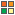

Tipos de página
Los tipos de página determinan la salida anterior y posterior a la de una operación. Cada operación tiene un tipo de página asociado. Crear nuevos tipos de página permite:
- Crear encabezados y pie de página personalizados para distintos grupos de operaciones.
- Excluir el menú, o incluir otro tipo distinto de menú no contemplado.
- Incluir recursos HTML comunes a un conjunto de operaciones.
- Incluir salidas no tradicionales que requieren distintos encabezados HTTP o distintos tags HTML (Por ejemplo mostrar un PDF).
Utilización de los tipos de página
Los tipos de página se eligen en la definición de la operación, pudiendo optar entre los predefinidos y aquellos particulares del proyecto.
Tipos de página predefinidos
 tipo_pagina: Clase abstracta que contiene los métodos encabezado() y pie() que los distintos tipos de página tienen que definir. Ver clase.
tipo_pagina: Clase abstracta que contiene los métodos encabezado() y pie() que los distintos tipos de página tienen que definir. Ver clase.
- tp_basico: Crea lo mínimo necesario para incluir HTML (javascript básicos, plantilla css? del proyecto, etc. No es recomendado para la extensión de un tipo de página que quiere incluirse operaciones comunes (no incluye todo el javascript ni estilos que necesitan los componentes toba).
- tp_normal: Incluye el HTML mínimo que necesita una operación clásica Toba, incluye el menú y una barra superior. Generalmente los proyectos van a heredar los tipos de página particulares de éste.
Creación de un nuevo tipo de página
- Definir el tipo de página en el editor: Desde el editor del proyecto accediendo al menú Configuración del Proyecto, en la sección Tipo de página, se puede dar de alta uno nuevo asociado exclusivamente al proyecto. Allí se debe ingresar la clase y su ubicación dentro del sistema de archivos del proyecto.
- Construir el nuevo tipo de página: Los tipos de página necesitan heredar de una clase abstracta común toba_tipo_pagina, ver en la documentación php los ejemplos de distintos tipos de página.
Ejemplo de extensión del tipo de página
El siguiente es un tipo de página extendido utilizado para el proyecto SIU-Quilmes, en la barra superior muestra un nombre jerárquico de la operación (ej Clientes > Formas de Pago > Listado):
<?php class tp_referencia extends toba_tp_normal { protected $titulo; function titulo_item() { if (! isset($this->titulo)) { $info['basica'] = toba::solicitud()->get_datos_item(); $item = new toba_item_info($info); $item->cargar_rama(); //Se recorre la rama $camino = $item->get_nombre(); while ($item->get_padre() != null) { $item = $item->get_padre(); if (! $item->es_raiz()) { $camino = $item->get_nombre() . " > ". $camino; } } $this->titulo = $camino; } return $this->titulo; } } ?>